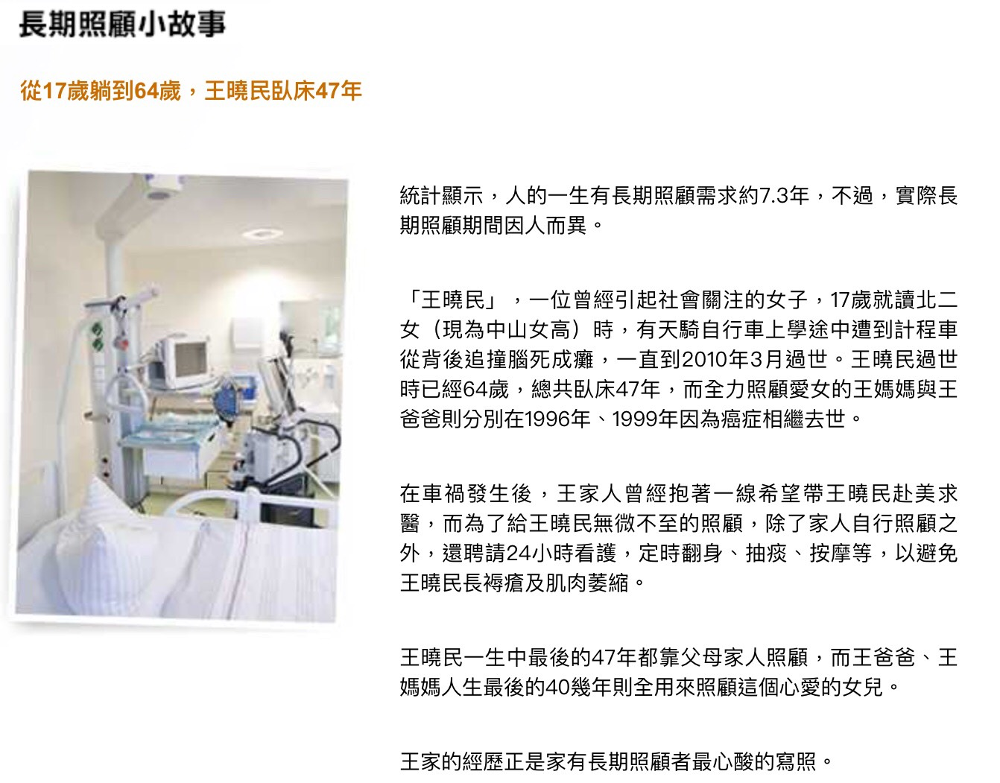

定方式以符合長期照顧狀態認定
重視老化風險，或擔心自己未來可 能因為老化、意外、疾病等導致長 照的民眾。
失智症
長期照顧狀態： A.生理功能障礙-6取3 (進食、移位、如廁、 沐浴、 平地行動、更衣)。
B.認知功能障礙-3取2 (時間、場所、人物分辨障礙) 。須定期醫師診斷。

例如:王曉民從17歲躺到64歲的臥床47年真實案例，一直到2010年3月過世，
在這過程全力照顧女兒的王媽媽與王爸爸則分別在1996年、1999年因為癌相繼去世。
在這漫漫47年中經過多少金錢的壓力與苦難的折磨，這是令人無法想像的痛苦。